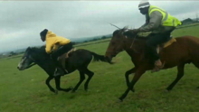
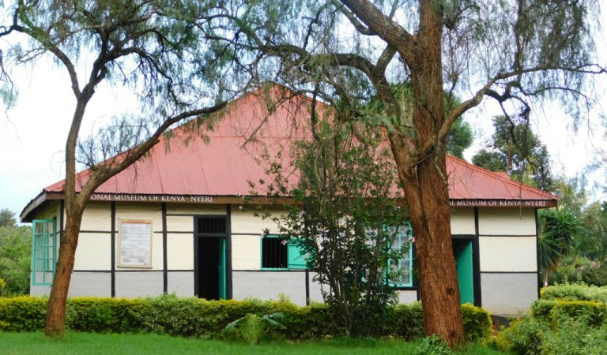
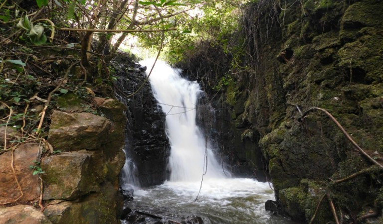
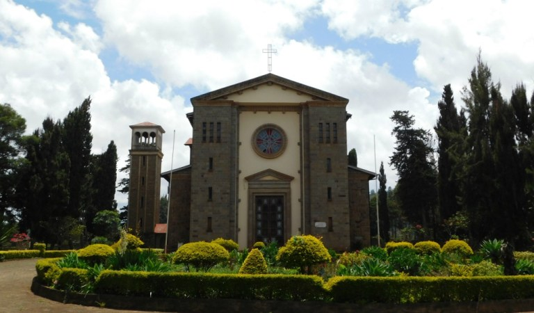
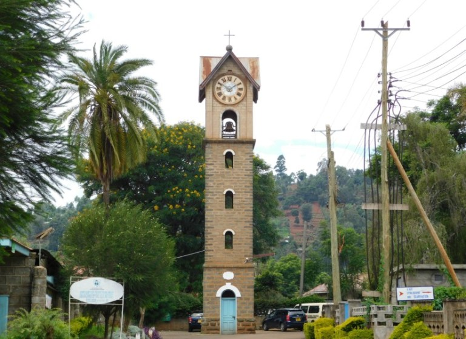

About nyeri county;
Nyeri is a massai name meaning place of heavy rains or cold. this is mainly due to the chilly weather around Nyeri.
Nyeri county is located in the former Central Province of Kenya with a population of 759,164 people. The headquarters of the county is in Nyeri town.
Nyeri county is bordered by Kirinyaga county to the East, Nyandarua to the West, Muranga to South, Laikipia to the North and Meru county to the North East.
The core values of the county include; patriotism, innovativeness, teamwork, intergrity and accountability with the vision of the county being A wealthy county with happy, healthy and secure people.
people and places
Nyeri has six sub-counties/Constituencies;
Tetu Constituency
Kieni Constituency
Mathira Constituency
Othaya Constituency
Mukurweini Constituency
Nyeri Town Constituency

the people of nyeri travel through the mountainous places through and by different means of travel, but one i would recommend
to you as a traveling individual would be horses.
the county is mostly occupied by the kikuyu people, but other enthinicities can be found around the county.
main attractions and parks include;
1.National Museums of Kenya – Nyeri Museum-constructed in 1924 as a “Native Law Court” to settle customary cases.
years after independence, the National Museums of Kenya took over in 1997. it is not known to many including the locals.

2.Baden-Powell information Center & Museum-The Baden-Powell museum is located along the Nyeri-Kamakwa road in the Outspan hotel Compound
3.Chinga Dam and Waterfall-This less-known site is located a few minutes from Othaya town,activities at the dam include boat riding,
fishing and watching the sun as it rises or sinks behind the Aberdare ranges.

4.Italian War Memorial Church- was built in 1952 and serves as the resting place for Italian Soldiers and their African allies who died during World War 2.
The Church is unique as it is open for Mass only once a year (First Sunday of November) to honor the soldiers.

5.Karatina Open Air Market in Nyeri County- located along Nairobi-nyeri road(A2), Karatina Market is East Africa’s largest open-air market. In this market, you will find almost all farm produce including cereals,
vegetables, and fruits.
6.Nyeri Old Clock Tower-tower is located inside Consolata Mathari Mission Hospital in Mathari, Nyeri. there is a story told about a priest who used to adjust the clock only for the laborers to work extra hours without knowing what time it was.

7.Mathari Mission Catholic Church-The church is a resting place of Sister Irene Nyaatha Stefani who was declared “Blessed” and a beatification ceremony held at the same place.
8.Nyeri Hill (“Githuuri”)- “Githuuri” is a Kikuyu name for a Hill.From the top of the hill, one can have great views of the main peaks of Mount Kenya.